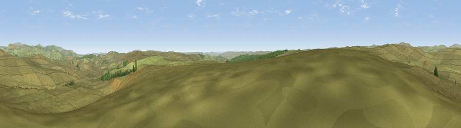

Viewpoint near Rochester
#12431 in England · top 35% of its area beats it · near RochesterWhere it is
The exact computed spot (NT 86275 02825). Click the marker for map links.
The view, rendered

A 360° render of this exact spot computed from the terrain model, tree cover and land cover — summer colours, afternoon light, calibrated against photographs of famous viewpoints. Real trees, hedges and buildings will differ in detail.
The panorama
Grey silhouette: terrain skyline in each direction (720 bearings, Earth curvature and refraction included). Dashed green: skyline with trees (+15 m) and buildings (+8 m) as obstacles. Blue strip: how far the ground is visible on each bearing.
Where the view opens
Wedge length = distance to the farthest visible ground on that bearing (vegetation-aware). Rings at 10, 25 and 50 km.
What fills the view
97% grassland · 3% woodland
Angular shares of the visible panorama (visual magnitude), not map area. Landscape diversity 0.06 (0–1 Shannon).
Key numbers
More beautiful places nearby
The staircase of upgrades: each row has a higher view potential than everything closer. Driving times are estimates from straight-line distance, calibrated against real road routing — check an actual route before setting out.
| Place | Direction | Drive | Score |
|---|---|---|---|
| Viewpoint near Rochester | W · 2 km | ~5 min | 63.8 |
| Viewpoint near Rochester | SW · 2 km | ~6 min | 66.4 |
| Viewpoint c12037_7784 | ESE · 3 km | ~7 min | 67.1 |
| Cold Law | E · 6 km | ~13 min | 76.1 |
| Thirl Moor | NW · 8 km | ~16 min | 77.2 |
| Wether Cairn [Wholhope Hill] | NE · 12 km | ~22 min | 80.7 |
| Viewpoint c12273_7856 | NNE · 13 km | ~23 min | 83.7 |
| Viewpoint c12396_7887 | NNE · 19 km | ~32 min | 85.7 |
55.31930, -2.21782 · source: screening · position refined by local search. Computed location — check access rights before visiting.